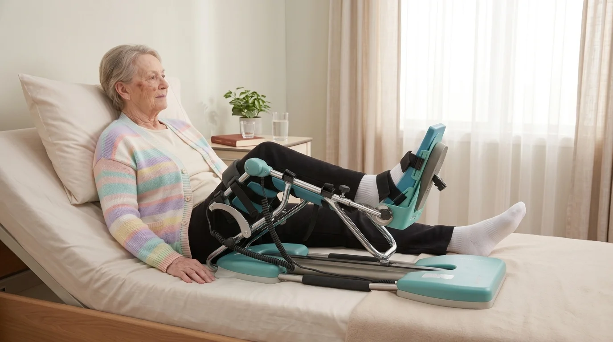

Een infectie van uw knieprothese is een van de meest ingrijpende complicaties na een knieoperatie. Vaak volgt een nieuwe ingreep waarbij de chirurg de knie grondig spoelt en reinigt, gevolgd door weken antibiotica. Daarna staat u opnieuw voor de opdracht om uw knie te laten buigen, maar nu met meer vermoeidheid, meer zwelling en vaak ook meer ongerustheid. Veel patiënten vragen zich af: mag ik de kinetec gebruiken na een geïnfecteerde knieprothese? In de meeste gevallen wel, maar het moment en het tempo hangen sterk af van de behandeling die u kreeg. In dit artikel leest u wat de verschillende behandelingen betekenen voor uw revalidatie, hoe een voorzichtig kinetec-schema eruitziet en op welke signalen u blijft letten.
Kort samengevat
Na een spoeling met behoud van de prothese (DAIR) wordt de kinetec vaak gebruikt zodra de wonde het toelaat, meestal na enkele dagen rust. Na een wissel in twee tijden met een spacer beslist de chirurg of de knie mag bewegen. De wonde en de infectiecontrole gaan altijd voor op het aantal graden. Bouw rustiger op dan na een eerste prothese en meld elk alarmsignaal meteen.
Wat is een Infectie van de Knieprothese?
Bij een prothese-infectie nestelen bacteriën zich op het oppervlak van de prothese of in het weefsel rond de knie. Dat gebeurt gelukkig zelden, maar wanneer het gebeurt, is een snelle en doortastende aanpak nodig. Artsen maken grofweg onderscheid tussen:
- Een vroege infectie, in de eerste weken na de plaatsing van de prothese. De wonde lekt, blijft rood of de knie wordt steeds warmer en pijnlijker.
- Een acute infectie via het bloed, soms jaren na de operatie, bijvoorbeeld na een andere infectie elders in het lichaam. Een knie die lang goed was, wordt plots dik, warm en pijnlijk.
- Een chronische of sluipende infectie, met aanhoudende pijn en zwelling zonder duidelijke verklaring, soms maanden na de ingreep.
Het soort infectie bepaalt welke operatie de chirurg kiest. En die keuze bepaalt op haar beurt hoe uw revalidatie, en dus het gebruik van de kinetec, eruitziet. Meer over de normale signalen na een prothese leest u in ons artikel over het herstel na een knieprothese week per week.
De Behandeling Bepaalt uw Revalidatie
Een prothese-infectie wordt bijna altijd behandeld met een combinatie van chirurgie en een lange antibioticakuur, vaak eerst via een infuus en daarna met pillen. De drie meest gebruikte ingrepen hebben elk een andere invloed op wat u met uw knie mag doen:
| Behandeling | Wat gebeurt er? | Kinetec? |
|---|---|---|
| DAIR (spoeling met behoud van prothese) | De knie wordt geopend, gereinigd en gespoeld. Losse onderdelen zoals het kunststof inlegstuk worden vaak vervangen; de prothese zelf blijft zitten. | Vaak wel, na enkele dagen wondrust, op advies van de chirurg |
| Wissel in één tijd | De oude prothese wordt verwijderd en in dezelfde operatie door een nieuwe vervangen. | Meestal wel, met een schema zoals na een revisie van de knieprothese |
| Wissel in twee tijden met een vaste spacer | De prothese wordt verwijderd en tijdelijk vervangen door een blok cement met antibiotica. De knie blijft gestrekt. | Nee, tot de nieuwe prothese geplaatst is |
| Wissel in twee tijden met een beweeglijke spacer | Een tijdelijke spacer die een beperkte buiging toelaat, in afwachting van de definitieve prothese. | Soms, binnen een beperkt bereik dat de chirurg vastlegt |
Na de tweede operatie, wanneer de definitieve prothese geplaatst is, start de echte revalidatie. Omdat de knie dan vaak al weken stilstond, is het risico op een stijve knie of artrofibrose groter. Juist dan kan de kinetec het verschil maken.
Waarom de Wonde Eerst Komt
Na een gewone knieprothese wordt de kinetec vaak al de eerste dag gestart. Na een ingreep voor infectie wacht de chirurg soms bewust enkele dagen. De reden: elke buiging zet spanning op de wondranden. Bij een wonde die net gereinigd werd, soms met een drain of een vacuümverband, wil men eerst zeker zijn dat de huid goed sluit. Een wonde die opnieuw openwijkt of gaat lekken, geeft bacteriën een nieuwe toegangspoort.
Daarom gelden na een infectie strengere afspraken dan na een eerste operatie:
- Start pas met de kinetec wanneer de chirurg groen licht geeft, ook als u zich goed voelt
- Houd het verband droog en gesloten en leg de steunen van het toestel nooit op de snede
- Leg een propere handdoek of hoes op de beensteunen en was uw handen voor u het been in het toestel legt
- Kijk na elke sessie naar de wonde. Wordt het verband nat of rood, stop dan en bel uw arts
Meer praktische tips over wondzorg vindt u in ons artikel over de kinetec bij hechtingen of nietjes.

Voorbeeldschema na een DAIR-Spoeling
Het schema hieronder is een voorbeeld voor een patiënt na een spoeling met behoud van de prothese. Het tempo ligt bewust lager dan na een eerste knieprothese. Uw chirurg bepaalt wanneer u start en hoe snel u opbouwt; zijn of haar advies heeft altijd voorrang.
20–30 min
als de wonde rustig blijft
30–45 min
actieve oefeningen
Begin elke sessie in een comfortabel bereik en verhoog pas na enkele cycli. Laat de snelheid laag staan; een trage beweging is beter voor de zwelling. Vergeet ook de strekking niet: probeer het minimum op 0° te zetten zodra dat lukt. Hoe u de graden en snelheid instelt, leest u in onze handleiding voor het instellen van de kinetec.
Antibiotica, Vermoeidheid en Herstel
Een prothese-infectie vraagt veel van uw lichaam. De lange antibioticakuur, soms met een infuuslijn in de arm die enkele weken blijft zitten, kan misselijkheid, diarree en vooral vermoeidheid geven. Dat heeft gevolgen voor uw revalidatie:
- Spreid de sessies over de dag. Drie korte sessies zijn haalbaarder dan één lange.
- Plan de kinetec op uw beste moment, bijvoorbeeld in de voormiddag of na een rustpauze.
- Eet en drink voldoende. Eiwitten en vocht helpen uw wonde en spieren te herstellen.
- Neem uw pijnstilling op tijd, ongeveer een half uur voor de sessie. Zie ook ons artikel over pijnstillers en de kinetec.
- Houd uw dijspier actief. Eenvoudige spanningsoefeningen in bed voorkomen krachtverlies; lees hierover meer bij quadriceps-activatie na een knieoperatie.
Stopt u om medische redenen tijdelijk met de kinetec, bijvoorbeeld omdat de wonde opnieuw lekt? Dat is geen falen. Na herstel van de wonde kunt u het schema hervatten op een iets lager aantal graden.
Neem meteen contact op met uw arts bij:
- Koorts boven 38°C of koude rillingen
- Een wonde die lekt, troebel vocht of etter afgeeft, of openwijkt
- Toenemende roodheid, warmte en pijn rond de knie, ook in rust
- Pijn, zwelling en warmte in de kuit, wat op een trombose kan wijzen
- Roodheid of pijn rond de infuuslijn in uw arm
Tips voor de Weken na de Infectie
- Houd een dagboek bij met de bereikte graden, uw temperatuur en hoe de wonde eruitziet. Dat helpt uw arts en kinesitherapeut bij elke controle. Hoe u de buiging zelf meet, leest u in ons artikel over kniebuiging meten thuis.
- Vraag naar het bereik in de operatiezaal. De chirurg weet hoe ver uw knie onder narcose kon buigen; dat is een realistisch doel.
- Wees mild voor uzelf. Na een infectie verloopt het herstel trager dan na een eerste prothese. Een eindresultaat van 100 tot 110° is voor de meeste dagelijkse activiteiten voldoende.
- Stap over op actieve beweging zodra de wonde dicht is en de chirurg akkoord gaat, bijvoorbeeld met een hometrainer zonder weerstand.
Kinetec Huren bij PhysioVisit
Bij PhysioVisit huurt u een professionele kinetec CPM-machine voor €17 per dag. We leveren en installeren het toestel overal in België, stellen het in volgens het schema van uw chirurg en leggen u uit hoe u het veilig gebruikt. Na een prothese-infectie duurt de huurperiode vaak iets langer dan na een eerste prothese; we passen de periode flexibel aan. Lees ook hoe lang u een kinetec huurt en wanneer u stopt.
Woont u in de regio Grimbergen, Strombeek-Bever, Humbeek, Beigem of Koningslo? Dan begeleidt onze kinesitherapeut u ook thuis via kinesitherapie aan huis, zodat u met een gevoelige wonde niet naar een praktijk hoeft. Voor de fase na de kinetec kunt u bij ons een hometrainer huren voor €2 per dag.
Over de terugbetaling
De terugbetaling van een kinetec verloopt via uw verzekering, niet via de mutualiteit. Wij bezorgen u een factuur die u bij uw verzekeraar indient. Sommige polissen betalen alles terug, andere de helft of een beperkt bedrag. Vraag dit altijd na bij uw eigen verzekering. Meer uitleg vindt u in ons artikel over de kinetec terugbetaling in België.
Veelgestelde Vragen over de Kinetec na een Prothese-infectie
Kinetec Nodig na een Prothese-infectie?
Wij leveren en installeren uw kinetec aan huis in heel België en stellen het toestel in volgens het schema van uw chirurg. Vanaf €17/dag.
Conclusie
Een infectie van de knieprothese zet uw herstel even terug, maar betekent niet dat een soepele knie buiten bereik is. Na een DAIR-spoeling of na de plaatsing van een nieuwe prothese helpt de kinetec om stijfheid te voorkomen, op voorwaarde dat u rustig opbouwt en de wonde de tijd geeft om te genezen. Met een vaste spacer wacht u op de volgende operatie. Volg de afspraken van uw chirurg, let op de alarmsignalen en neem de vermoeidheid van de antibioticakuur ernstig.
Wilt u een kinetec laten klaarzetten voor uw ontslag uit het ziekenhuis, of twijfelt u of het toestel in uw situatie zinvol is? Neem gerust contact met ons op. Lees ook wat u kunt verwachten wanneer u na uw ontslag uit het ziekenhuis thuis verder oefent.